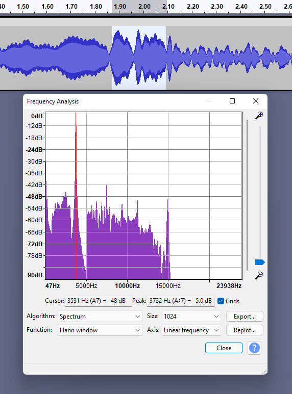
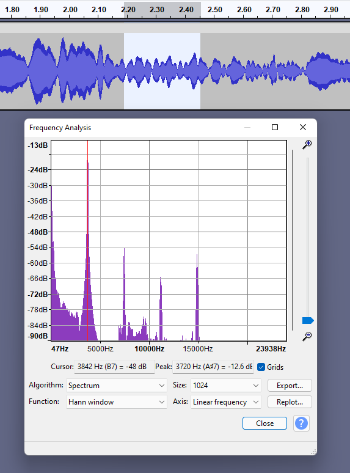

| Homepage | The Doppler Effect | Project Bibliography |
The Doppler Effect is a phenomenon that affect waves, both sound and light. In summary, the Doppler Effect is the compression or expansion of sine waves, causing the listener to perceive sound at different frequencies than what is truly being emitted. The reason for this is that when a sound is moving each wave is reaching the ear of the listener earlier and earlier since the source of the waves is being moved closer to the listener each time it emits a wave; this causes the listener to perceive more wavelengths in the same amount of time than they would if the sound source were stationary. The same goes for when the sound source is moving away, where the waves are progressively being emitted farther and farther away from the listener.
One example of the Doppler Effect in music is the Leslie speaker. Donald Leslie, in the 1930’s, wanted to make his Hammond organ replicate the sound and volume of the pipe organs in larges spaces like churches and theaters. His solution for this was to have a rotating speaker to "throw" the sound around the room with the intent of filling the room with more sound. Though when he turned it on, it did not amplify the sound; instead it gave different effects to the music, such as making a chorus effect at low speeds and a vibrato effect at high speeds. Like stated earlier, this is because the point of origin for each wave is constantly changing, making the frequency at which each wave occurs different. The different frequencies appear to alter the pitch of the sound.
To make the buzzer make the sound, the electrict plate has to have some sort of power source; a 9V Battery is a great, and the recommeneded, option. To be able to run power to the buzzer, I had to solder the battery connecter to the buzzer. After that, I could put the battery into the connector and the buzzer start ringing. I then found a small cardboard box that could hold the buzzer/battery together while I threw them around and swung them near the microphone.
After the set up was completed, and the buzzer was ringing inside the box, I proceded to swing and trhow the buzzer around and near my phone while it was recording to demonstrate the motion needed to produce the Dopppler Effect. Here are some examples of the different sounds I was able to produce.
One of the best examples that I recorded was me throwing the buzzer across the room, over my phone. Here the audio in the two seconds directly after the buzzer passes over the mic. The plot spectrum analysis reports the frequency to be 3732 Hz, but after two seconds, it reports it to be 3720 Hz. The curious thing is neither of these frequencies are that close to 3600 Hz, which I was not able to explore.
This is the plot spectrum right after it passes.
This is the plot spectrum two seconds after it passses.